17. Extensão de quadril com faixas
Hip Extension with Bands · Faixas elásticas
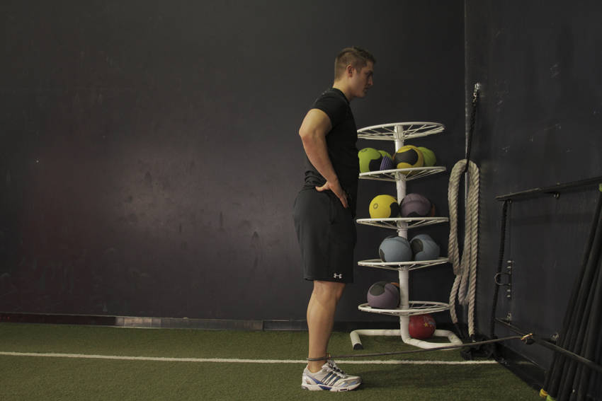
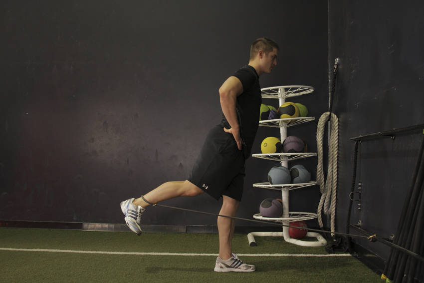
Hip Extension with Bands · Faixas elásticas


Single Leg Glute Bridge · Peso corporal
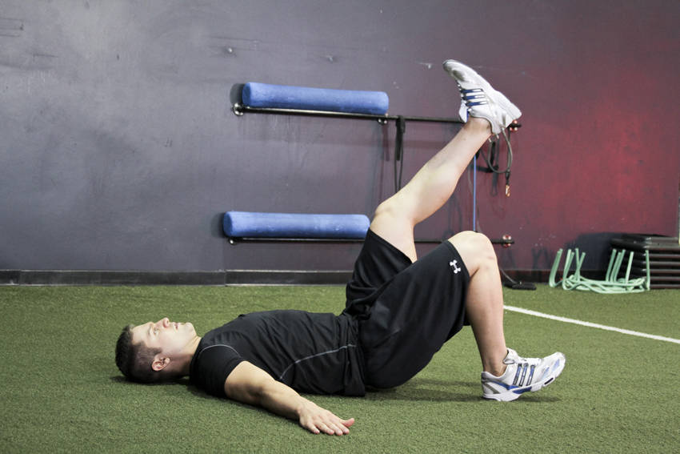
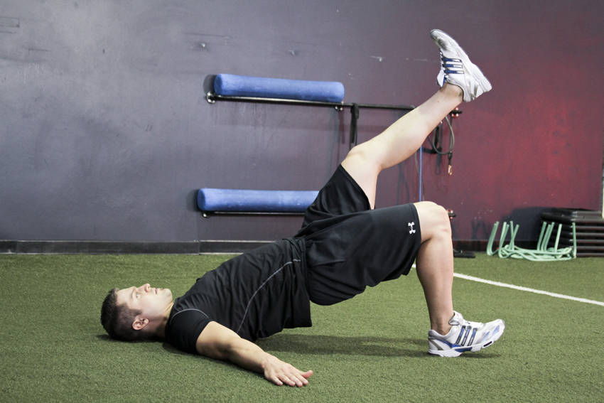
Step-up with Knee Raise · Peso corporal


Butt Lift (Bridge) · Peso corporal
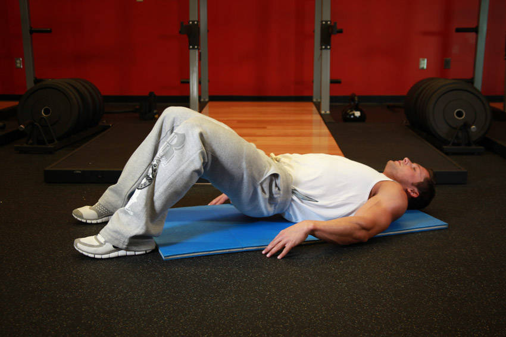
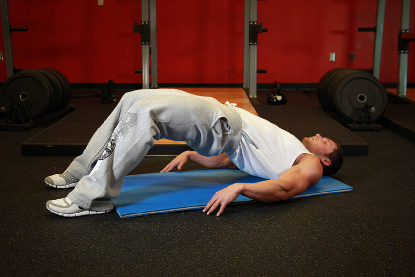
Flutter Kicks · Peso corporal
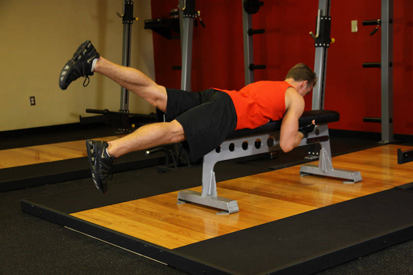
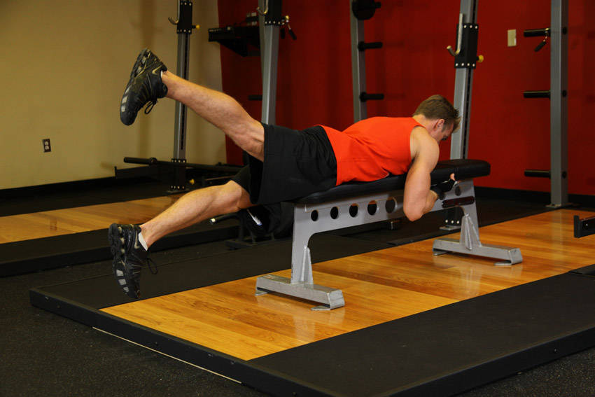
Glute Kickback · Peso corporal
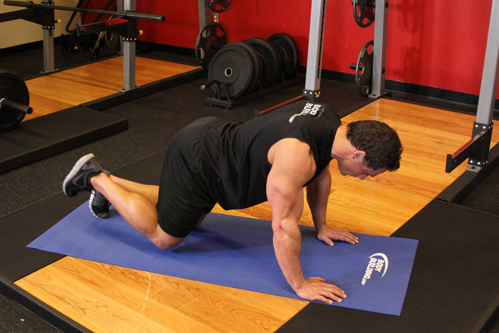
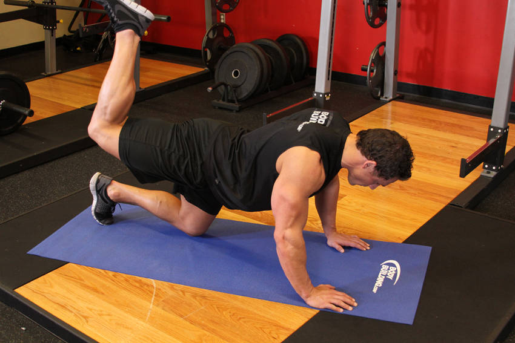
Leg Lift · Peso corporal
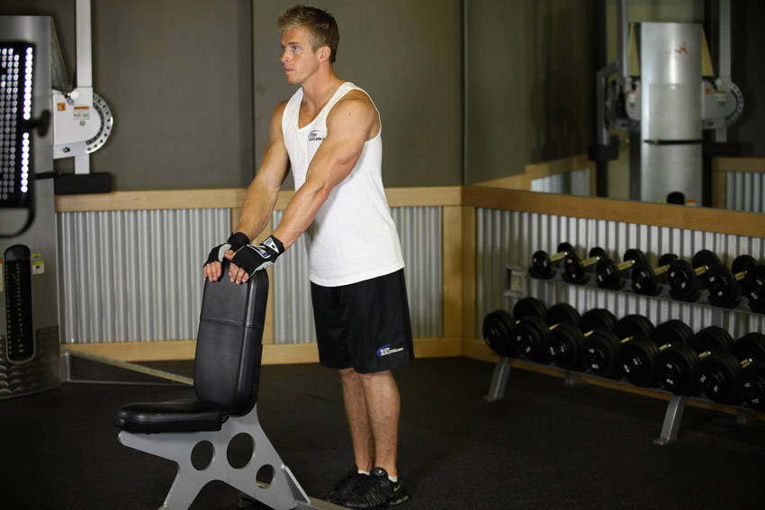
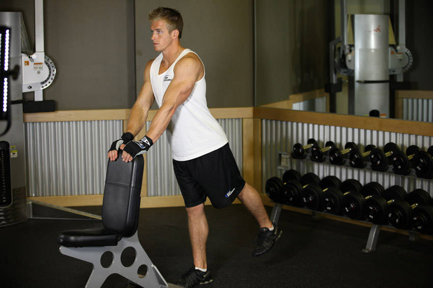
Physioball Hip Bridge · Bola suíça
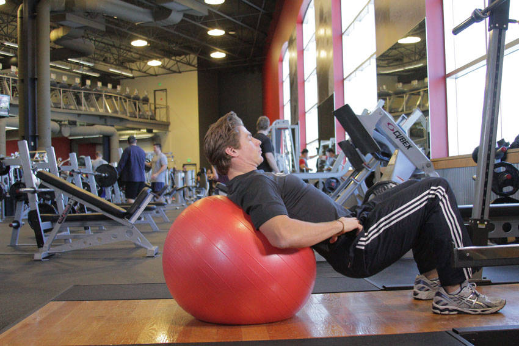
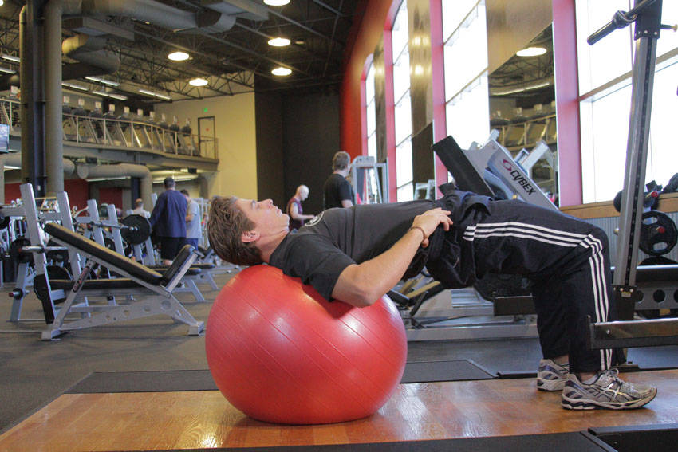
Pull Through · Cabo
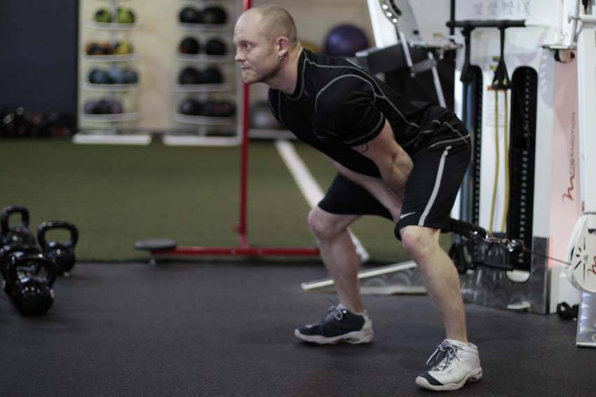
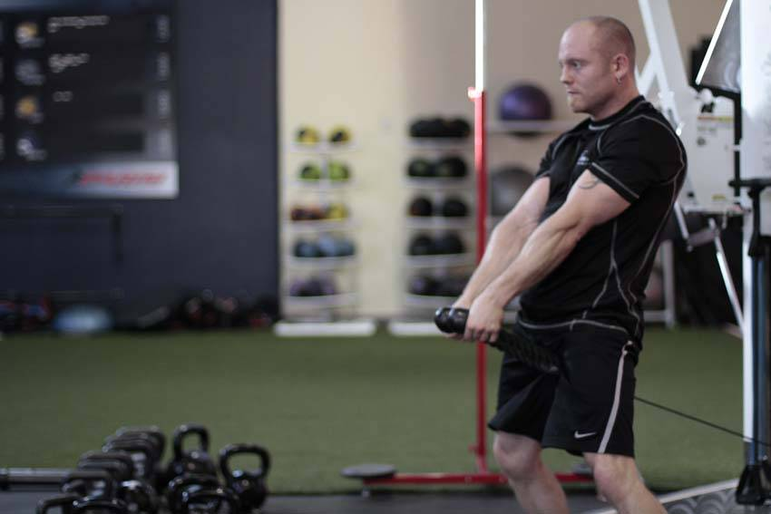